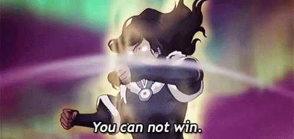
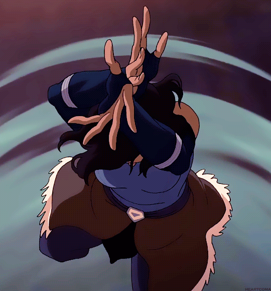
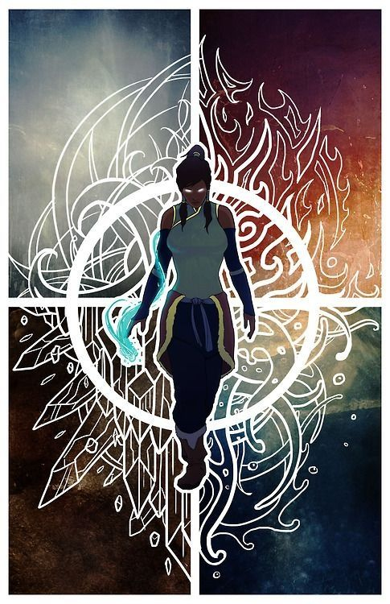

01
Fonctionnement général
La lumière de Sasha fonctionne comme une extension directe de son énergie occulte. Elle peut la concentrer
dans ses mains, ses jambes, autour de son corps ou même la projeter à distance. Selon sa volonté, cette
lumière change de couleur, de densité et de comportement.
Elle peut passer d’une couleur à l’autre, mais ce n’est pas quelque chose qu’elle peut faire n’importe comment.
Changer trop rapidement de couleur demande beaucoup de concentration, et si Sasha force trop son énergie,
ses attaques deviennent moins précises. Elle doit donc choisir la bonne couleur au bon moment, sinon elle peut
perdre l’avantage en combat.
02
Lumière rouge — Puissance brute
La lumière rouge est la forme la plus violente de son sort. Quand Sasha l’utilise, son énergie devient dense,
lourde et beaucoup plus destructive. Les attaques rouges ne sont pas forcément les plus rapides, mais elles
frappent très fort et peuvent faire de gros dégats lorsqu’elles touchent.
Cette lumière est surtout utilisée pour briser une défense, repousser un adversaire trop solide ou forcer un
fléau à reculer. Sasha peut concentrer la lumière rouge dans ses poings ou ses jambes avant de frapper, ou la
relâcher sous forme d’explosion lumineuse à courte ou moyenne distance.
Plus elle charge l’attaque longtemps, plus l’impact devient puissant. En échange, la technique devient plus
prévisible et consomme beaucoup d’énergie.
03
Lumière bleue — Zone et éblouissement
La lumière bleue est plus fluide et plus large. Elle sert moins à frapper une seule cible qu’à contrôler
un espace autour de Sasha. Elle peut la relâcher sous forme d’ondes lumineuses, d’éclats ou de cercles qui
se répandent sur une zone.
Les dégâts sont moins concentrés que ceux de la lumière rouge, mais la lumière bleue peut toucher plusieurs
adversaires en même temps. Elle possède aussi un effet d’éblouissement : les personnes prises dedans peuvent
avoir du mal à viser, à suivre les mouvements de Sasha ou à garder leur concentration.
Ce n’est pas une paralysie, mais cela peut créer une ouverture suffisante pour prendre l’avantage.

04
Lumière jaune — Restriction
La lumière jaune est la moins destructive des trois, mais elle est souvent la plus gênante. Sasha l’utilise
pour ralentir les mouvements de ses adversaires, limiter leurs déplacements ou les forcer à rester dans une
position désavantageuse.
Cette lumière peut prendre la forme de liens lumineux, de marques au sol ou de cercles qui s’accrochent aux
jambes, aux bras ou au corps de la cible. Sur une personne faible, déjà blessée ou surprise, elle peut provoquer
une paralysie temporaire.
Sur un adversaire plus puissant, elle ne bloque pas totalement, mais elle gêne assez pour casser un enchaînement,
ralentir une attaque ou empêcher une fuite.
05
Garde lumineuse
Sasha peut concentrer sa lumière autour de son corps afin de se protéger. Cette garde change elle aussi
d’effet selon la couleur utilisée. En rouge, elle absorbe moins bien mais permet de relâcher une contre-attaque
violente. En bleu, elle protège sur une zone plus large. En jaune, elle peut ralentir l’ennemi qui tente de
passer trop près.
Ce n’est pas une défense parfaite. Face à une attaque très puissante, Sasha peut quand même être projetée
ou blessée, mais cette technique lui permet souvent de tenir quelques secondes de plus.

06
Combinaisons de couleurs
Avec une bonne concentration, Sasha peut enchaîner plusieurs couleurs dans un même combat. Par exemple, elle
peut utiliser la lumière jaune pour restreindre un adversaire, puis enchaîner avec une attaque rouge pour
frapper lourdement. Elle peut aussi utiliser la lumière bleue pour éblouir une zone avant de se déplacer plus
vite et prendre un meilleur angle d’attaque.
Cependant, mélanger les couleurs demande beaucoup de précision. Si elle enchaîne trop vite ou si elle est
déconcentrée, ses couleurs peuvent devenir instables et perdre en efficacité.
07
Extension du territoire — Sanctuaire du Soleil Bleu
L’extension du territoire de Sasha crée une dimension baignée dans une lumière bleue et blanche presque irréelle.
À l’intérieur, le sol, le ciel et l’air semblent traversés par des courants lumineux qui ne laissent aucun coin
réellement sombre. C’est un espace froid, calme, mais étouffant, comme si toute la dimension avait été pensée pour
exposer ce qui tente de se cacher.
Le concept du domaine est simple : toute personne présente dans la dimension, à l’exception de Sasha et des
personnes qu’elle choisit de protéger, finit progressivement aveuglée par la lumière. Plus la cible reste longtemps
dans le domaine, plus sa vision devient instable, brouillée, puis presque inutilisable.
L’effet garanti du domaine n’est donc pas une attaque directe, mais une saturation lumineuse constante. Les ennemis
voient leurs repères disparaître, leurs mouvements deviennent moins précis et leur capacité à suivre Sasha baisse
rapidement. Même si la cible n’est pas totalement immobilisée, elle se retrouve forcée de combattre dans un monde
où ses yeux ne peuvent plus vraiment lui faire confiance.
Sasha, elle, reste parfaitement capable de voir dans son propre domaine. Elle peut aussi décider que certaines
personnes ne soient pas affectées, ce qui lui permet de protéger des alliés ou de choisir qui peut encore distinguer
la réalité au milieu de cette lumière.

